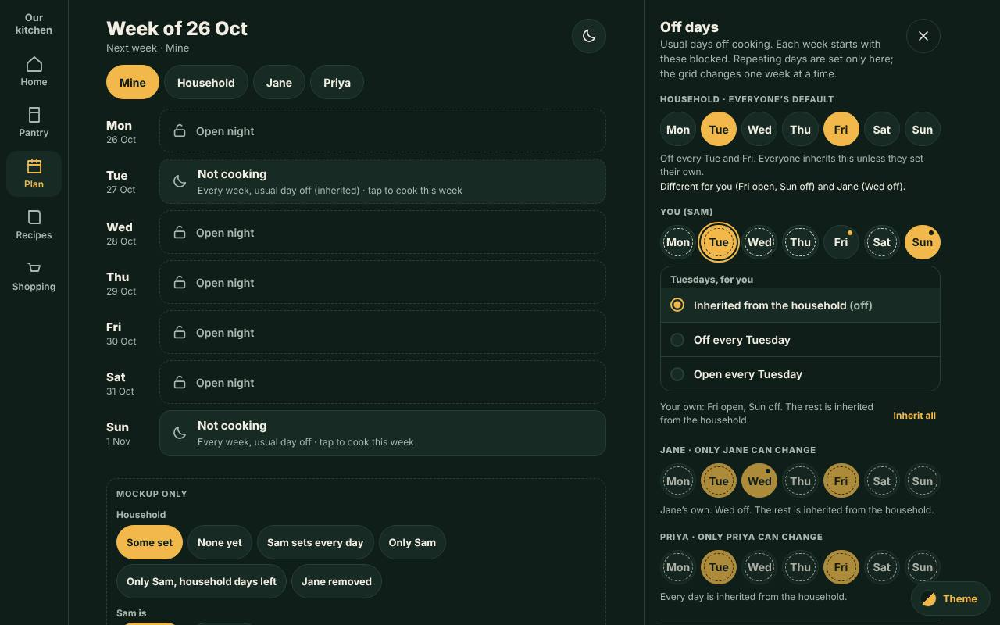
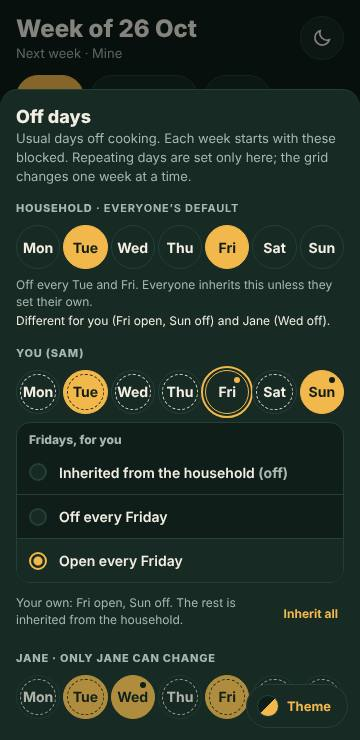

Off days: usual days off, household and person
Kitchie issue #860. Mockup only, nothing is saved or built. The Off days flyout (the moon in the Plan header, until now the Meal planning flyout opened from a cog) gets a Household row of usual days off that applies to everyone by default; each person keeps their own setting and the person wins, whichever way they disagree. The Categories and Leftovers rename section is gone from it. Drawn on the Home Plan it flyout's shape (right-hand lane on desktop) and the Preferences handling of a value that is inherited from the household. A day is open (unfilled) or off (filled); inherited is a flag on either. It covers the phone (bottom sheet) and the desktop (right-hand lane flyout) alike.
The owner asked for no sign-off rounds on this mockup: every call is a numbered decision or a Proposal with an open question and a recommended answer. Full spec: docs/knowledge/plan-usual-days.md. Check: tools/plan-usual-days-check.mjs.
Each page opens with the flyout open; press the moon (or S on desktop) to open it again. Below the week, Mockup only switches the sample household and whether Sam is an admin. Tap a day on You (Sam) to choose Inherited from the household, Off or Open for that weekday. Tap a household day (as an admin) to see who inherits it and whose own setting stays. Tap a Not cooking night in the week to cook it this week only (unchanged).







| Look | Meaning |
|---|---|
| Filled, dashed ring inside | Off, inherited from the household |
| Filled, a dot | Off, set by the person |
| Unfilled, dashed ring inside | Open, inherited from the household |
| Unfilled, a dot | Open, set by the person (opens a household day: the person wins) |
The order of precedence: a one-week change for the date, then the person's own setting for the weekday, then the household's. Fill is the value (filled = off, unfilled = open); the ring and the dot say where it came from. Today's personal days are exactly "own off"; nothing existing changes meaning.
- UD-D1. The order of precedence is one-week change, then the person's own weekday setting, then the household's. The person wins in both directions (owner, #860). The one-week override still beats everything, exactly as the code does today.
- UD-D2. A day is open or off; "inherited" is a flag on either value, and the stored model does not change. A person has three possible stored states per weekday: nothing (the day is inherited from the household), own off, own open. The effective value is open or off; the flag says whether it was inherited or set by the person. Today's personal list is exactly "own off"; no existing setting changes meaning, nothing is rewritten, and a household with no household days behaves exactly as today. Adopting the open/off plus inherited wording forced no change to the stored model, the precedence (UD-D1) or the build impact below; only words, the chip drawing and the tile subtitle changed.
- UD-D3. Only household admins change the household row (owner's standing rule P2, D25 to D28: household things are admin-only; read-only for everyone else with one line, never hidden). The line is the owner's own: "Only household admins can change this." The existing rule for personal rows stays: only that person can change it ("only Jane can change"). Another person's row is visible and read-only, and shows inherited versus own in the same way.
- UD-D4. The household row is called "Household" (the owner's word in Plan UI review 201: "Household", not "Everyone") and comes first, above You.
- UD-D5. The Categories section and its Leftovers rename row are gone from this flyout, on phone and desktop (one sheet). Nothing is removed from the server:
GET/PATCH /api/plan/categoriesand the rename stay. Where it is reached from now is UD-P9. - UD-D6. The household never writes a person's own setting. Changing a household day changes what everyone who inherits it gets; nobody's own choice is edited (owner's standing P1, subject control, and P6, forward-looking changes).
- UD-D7. Edits save as you tap, as today. No Save button. The phone sheet keeps Done, the desktop flyout the X.
- UD-D8. A personal "open" on a household-off weekday is a permanent personal choice and reads in the week as a plain open night. The tip "Usual day off, cooking this week" stays for what it means today: a usual day lifted for one week only.
- UD-D9. One markup, one script, the same class names for phone and desktop; only the container differs (
.ud-*classes;usual.cssshared,lane.cssdesktop only,sheet.cssphone only). DESIGN.md section 7 and the owner's standing rule of 10 October (viewport-specific code in its own file). - UD-D10. A removed member has no row. Their settings never touch anyone else's; restoring them inside the week brings their own settings back (RM-D1); they are erased with them after the week.
- UD-D11. Keyboard. S opens the flyout (the Plan's existing key; its help-list line becomes "Off days"), left and right arrows move along a row, Enter opens a day's choices, the first Escape closes the choices and the second the flyout.
- UD-D12. The Plan header gets no badge (only the trigger itself changes, UD-D15). Whether a night is blocked by the household or by the person is shown on the night's tile, not in the header (UD-P7).
- UD-D13. The flyout is titled "Off days" (owner, 17 Oct 2026, replacing "Meal planning"). The exact text is Off days, on phone and desktop, in the dialog variant (
desktop.html?c=dialog), the page title bar ("Off days on a phone", "Off days on desktop"), the page headings, and the dialog's accessible name (aria-labelledbythe heading). Entry points that open it use the same name: the trigger's accessible name and tooltip are "Off days" and "Off days (S)", and the keyboard help line is "Off days". The sentence under the title keeps today's copy ("Usual days off cooking. ..."). Where the old title survives: the olderfragments/plan-desktopandfragments/plan-week-aisettings sheets and the Plan UI review headers now say "Off days" too (see Build impact for the real code). - UD-D14. One vocabulary: open, off, inherited. A day is open (unfilled) or off (filled). Inherited is a flag on either, meaning it came from the household and the person set nothing; it is never a third value. Used in the key, the buttons ("Inherit all", the choice "Inherited from the household (off)"), status lines ("Inherited by: Sam and Priya."), hints, tooltips, accessible names, the week tile ("Every week, usual day off (inherited)") and this document. The stored model is unchanged (UD-D2).
- UD-D15. The trigger is a moon, not the settings cog (owner, 17 Oct 2026), on phone and desktop, in the Plan header. It is the repo's existing moon (
ic.moon, the Plan UI review icon set: 24 grid, 2px round stroke, pathM20 14A8 8 0 0 1 10 4a8 8 0 1 0 10 10z), so no new glyph. Its accessible name is "Off days", its tooltip "Off days (S)". Dark and light both usecurrentColor.
Each one is a judgment call with the open question, the recommended answer and what a wrong guess costs.
- UD-P1. On desktop Off days is a right-hand lane flyout (the Home Plan it flyout's shape), not the bottom sheet or a centred window. Q: do you want that shape? Recommend yes: you asked to reuse the flyout layout. A wrong guess costs a container swap only, the content is identical;
desktop.html?c=dialogdraws the same content as the centred window the Plan desktop mockup has today. The phone and tablet keep the sheet. - UD-P2. A person changes a day with two taps: the day, then one of three choices. Q: or one tap that cycles? Recommend the three choices: a cycle hides the third state and silently pins a day. A wrong guess costs one extra tap on the most common edit. With nobody to inherit from (a household of one, no household days) a tap is a plain on and off, as today.
- UD-P3. Filled/unfilled for the value, a dashed inner ring for inherited, a dot for set by the person, and the key (table above). Q: is "ring = inherited, dot = set" readable at a glance, and is a ring-in-the-chip enough on a 34px-high chip? Recommend as drawn: the fill never changes meaning, so the two flags cannot be mistaken for the value. A wrong guess costs a restyle of one block of CSS (tokens only).
- UD-P4. A household chip changes at once, with no confirm; a status line says who inherits it and whose own setting stays ("Wednesdays are off for the household. Inherited by: you and Priya. Own setting stays: Jane."). Q: should changing the household's day ask first, since it changes everyone's default? Recommend no confirm: the person always wins, so the worst case is a default someone overrides, and it is one tap to put back.
- UD-P5. A person's own setting that equals the household's is kept as their own (a dot, no ring). Choosing "Off every Friday" while the household has Friday off stays the person's own, so it holds if the household later opens Friday. Q: or should it collapse to inherited? Recommend keep: it is what the person chose, and the dot shows it. A wrong guess costs a day that does not move when the household's does; "Inherited from the household" per day and Inherit all for every day undo it.
- UD-P6. "Inherit all" clears every own day at once, no confirm, with Undo in the status line. Q: ask first? Recommend no confirm, with Undo (the Plan's undo habit).
- UD-P7. A week tile that is off by inheritance reads "Every week, usual day off (inherited)"; one the person set keeps "Every week, usual day off". The first is a new string (the existing phrase plus the flag word). The Household view's own tiles say "Every week, usual day off" (they are the source, not inherited). Q: add it, or keep the one wording for both? Recommend add it: without it a person sees a night blocked that they never set and cannot tell why. A wrong guess costs one string.
- UD-P8. The Household view of the Plan shows the household's days off as Not cooking. Today the Household view draws the viewer's own marks, which would leave a household with Fridays off looking open on its own tab. Outside this flyout. Q: yes? Recommend yes, as slice 2.
- UD-P9. Where the Leftovers rename goes. Not drawn (the owner asked only for its removal here). Options: (a) a protected row "Leftovers (planning)" in Settings, Categories; (b) the Household page; (c) nowhere until asked (the server feature stays). Recommend (a), household admins only, because the name is household-wide and the owner's P2 makes household names admin-only. This collides with today's code (any member can rename:
PATCH /api/plan/categories/leftovers, no admin check), so (a) as admin-only is a behaviour change to be confirmed. - UD-P10. The Household row is hidden for a household of one with no household days, and shown whenever household days exist (for example after a member was removed, so the remaining person can see and change what applies to them). Q: always show it? Recommend as drawn: with one member the row is noise, and the flyout then equals today's.
- UD-P11. The plan event for a usual-day change says whose it is ("Changed the household's usual days off to Tue, Fri" versus the person's). Q: should other members be told (Household activity, Kitchie #110)? Recommend the wording only; whether it notifies follows #110's own decision.
- UD-P12. The line "Different for you (Fri open, Sun off) and Jane (Wed off)" on the household row (capped at three names, then "and N more"). It makes the person-wins effect visible to the admin who sets the default. Q: keep? Recommend keep. A wrong guess costs a line.
- UD-P13. The moon is also the Plan's "Not cooking" glyph; the header trigger and the tile glyph are the same shape. The owner asked for a moon on the trigger (UD-D15), so it is drawn. The overlap: on the phone the "Not cooking" tiles, labels and week-header counts already use the moon (
plan.phone.jslines 56, 66, 123, 143), and the desktop tile does too (plan.desktop.js135, 546). Q: keep the same moon, or tell them apart (for example a moon with a small star, or a filled moon on the trigger)? Recommend the plain moon as asked: the trigger is a button in the header with the accessible name and tooltip "Off days", the tile glyph sits inside a tile that says "Not cooking", and the two mean the same thing (a night off). A wrong guess costs one icon swap in two files (the trigger icon is the only change).
Verdict: this needs a schema change (48), and it is small. A stencil row can only say off, so a person's "open" on a household-off weekday has no place to live. A no-DDL encoding exists (reserved ids in the member column of plan_stencil) but it puts phantom members in the Plan strip, leaves personal rows behind when a member is erased, and lets older code run on the new rows after a rollback, so it is not recommended. The smallest change is schema 48 with two new tables (plan_household_stencil and plan_stencil_open), additive, no backfill, a household with none behaves as today. #838's Option 2 also claims 48; one schema change at a time, the owner merges the schema slice.
Server (guarded slice): store.ts, plan.ts (one usualOff used wherever stencilSet is), web-plan-api.ts (a household scope behind householdWriteAllowed, an open list), inventory-port.ts, event-registry.ts, docs/plan-week-api.md, tests and a schema-47 fixture. Page code (routine slice): plan-sheet.js, plan.js, plan.phone-data.js, plan.phone.js, plan.desktop.js, plus new plan-usual*.css assets. Exact lines, the SQL, the risks and the API shape are in docs/knowledge/plan-usual-days.md, section Build impact.
Each screen is the page, the two shared stylesheets, three small stylesheets and two scripts (the flyout, about 16 KB; the stand-in page, about 9 KB). No image, no font and no request beyond that; the screenshots on this page load only here, lazily. Phone and desktop container rules are separate files (sheet.css, lane.css), so a phone never downloads the lane. In the build nothing is added to the Plan page load: the flyout code and its CSS load on the first press of the moon, as plan-sheet.js does today, and the week read the Plan already makes carries every member's rows.
usual.js and usual.css are the flyout (the build copies them first); lane.css and sheet.css the two containers; page.js, page.css, desktop.css and phone.css the stand-in Plan page around it (not part of the design: the real screens are fragments/plan-desktop and fragments/plan-ui-review). The older Plan mockups (plan-desktop, plan-week-ai) lost their Categories row and point here.